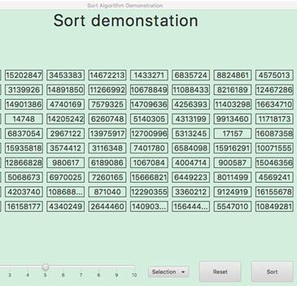

TAS FACULTY
Software Design & Development - links to student work
HEAD TEACHER: Ms McBride
Chess, puzzle games and an example of the syllabus sort algorithms in varied states of completeness:
|
Student, Link, Description, Image, Folio and Email |
|
Shawaiz
https://sbh-2806.github.io/15-Puzzle/
The old 15 piece puzzle where you have to order the tiles. Sounds easy??
Folio: 12A3-Doc-B_Shawaiz
GitHub Repository: https://github.com/Sbh-2806/15-Puzzle
Shawaiz.Bhatti@education.nsw.gov.au |
|
Thomas
https://wouga1.github.io/Masyu/
Masyu is played on a rectangular grid of squares, some of which contain circles; each circle is either "white" (empty) or "black" (filled). The goal is to draw a single continuous non-intersecting loop that properly passes through all circled cells. From <https://en.wikipedia.org/wiki/Masyu>
Folio: 12A3-Doc-V_Tom
GitHub Repository: https://github.com/Wouga1/Masyu
Thomas.Varvell@education.nsw.gov.au |
|
Haitao
No direct website.
Chess, both normal and "Really Bad Chess" where you may have 3 Queens and 2 bishops! Running this game takes considerable set up, but the image below shows that a player can show the possible moves a piece can make:
Folio: 12A3-Doc-W_Haitao
GitHub Repository: https://github.com/Hayden-666/JChess
Haitao.Wang1@education.nsw.gov.au |
|
Noah
https://noahny.github.io/blackjack/
Play Blackjack here - while there are some problems with the screen elements, the code under the bonnet is very sophisticated:
Folio: 12A3-Doc-Y_Noah Gantt Chart: 12A3-Doc-Y_Noah-Gantt Log: 12A3-Doc-Y_Noah-Log
GitHub Repository: https://github.com/NoahNY/blackjack
Noah.Young2@education.nsw.gov.au |
|
Sung Ji
https://bwbsungjicho.github.io/discord-bot/ (can only be run with Discord)
This is best viewed by demonstration. If you're chatting on Discord and want to plan an event, chances are this "bot" will do it for you. It saves time when creating a range of functions.
Folio: 12A3-Doc-Ch_SungJi
GitHub Repository: https://github.com/bwbsungjicho/discord-bot
Sung.Cho34@education.nsw.gov.au |
|
Liam
https://lemone-lime.github.io/Secret/
A Physics Engine which emulates Newtonian laws of collisions with gravity. Objects have variable area and mass and can be shot in an Angry Birds style.
Folio: 12A3-Doc-H_Liam
GitHub Repository: https://github.com/Lemone-Lime/Secret
Liam.Hall4@education.nsw.gov.au |
|
Sidharth
https://sidharthkn.github.io/VenueVulture/
Need to book that tennis court or other venue - try this app which links with maps to allow a booking.
Folio: 12A3-Doc-K_Sid Gantt chart: 12A3-Doc-K_Sid-Gantt
GitHub Repository: https://github.com/sidharthkn/VenueVulture
Sidharth.KannegalNarayanan@education.nsw.gov.au |
|
Callum
https://jackryko.github.io/JSort/
The SDD curriculum involves studying the standard algorithms for 3 types of sort. This site demonstrates the sorts and the logic behind them. 
Folio: 12A3-Doc-M_Callum Demo: 12A3-Doc-M_Callum-Demo
GitHub Repository: https://github.com/jackRyko/JSort
Callum.McCracken@education.nsw.gov.au |
|
Maxim
No web version as download is complex
Musos may have a midi file of their last performance. This app analyses the file, identifies the pitch and timing of notes and identifies if simultaneous notes are chords, It then extracts data from the file which can play on a piano simulation.
Folio: 12A3-Doc-N_Maxim
GitHub Repository: https://github.com/mnechip/midi-reader-module
Maxim.Nechiporenko1@education.nsw.gov.au |
|
Finnegan
https://abandw1.github.io/CodingCliques/NodeMapProg/
Many of the Blackwattle student population responded to a survey and listed their 5 closest friends. This data was translated into an animated network map with nodes and links.
Folio: 12A3-Doc-O_Finn-Log
GitHub Repository: https://github.com/abandw1/CodingCliques
Finnegan.OConnor@education.nsw.gov.au |
|
Ben Download, unzip an run "main" from inside the "main" directory: https://github.com/B3NJP/FinalSDDProject/releases
This game is a rogue-like RPG (role playing game). The primary concept behind this development is to provide a game with a customisable attack system. Complex algorithms were written in Python, displayed with PyGame, then wrapped into an executable file. Use WASD to move Up, Left, Down or Right respectively
Folio: 12A3-Doc-P_Ben
GitHub Repository: https://github.com/B3NJP/FinalSDDProject
Benjamin.Pearcy@education.nsw.gov.au |
|
Anass
https://anasstalab.github.io/Whack-A-Mole/
A Whack a Mole game - it has problems but Anass will demonstrate and the story is interesting.
Folio: 12A3-Doc-T_Anass
GitHub Repository: https://github.com/AnassTalab/Whack-A-Mole
Anass.Talab@education.nsw.gov.au |
|
Asher
https://mrsmokedsalmon.github.io/ (the executable doesn't work without the surrounding files) V1.6 Zip: https://github.com/MrSmokedSalmon/MrSmokedSalmon.github.io/archive/refs/tags/V1.6.zip
Tic Tac Toe or Noughts and Crosses. Executable doesn't seem to be working.
Folio: 12A3-Doc-Ca_Asher
GitHub Repository: https://github.com/MrSmokedSalmon/MrSmokedSalmon.github.io
Asher.Carey1@education.nsw.gov.au |


A wide variety of projects:
|
Harvey: Website: https://HarveyB02.github.io/minesweeper If you're behind the school firewall: MineSweeper Repository: https://github.com/HarveyB02/minesweeper
|
|
Michael: Download zip and run GUI.py Repository: https://github.com/mlists/MazeSolver
|
|
Daniel: Chess - 1 player - beat the machine!
|
|
Max: Download Dungeons zip (23MB), unzip (57MB) and run SDDungeon.exe 65 is the record!!! Game is best run at 1200 x 800 Controls: 1 | 2 = Primary | Secondary 3 | 4 | 5 = Utility 3 | 4 | 5 Space = Open chest Space Space = Bin Ctrl 1 | 2 | 3 | 4 | 5 = Equip item
|
|
Vincent: Website: Prime numbers above a #
|
|
Ken: Website: Calculator in JavaScript
|
|
Sam: Website: Binary Puzzle from scratch in JavaScript
|
|
James: Pong built in JavaScript
|
We were just learning to use GitHub in these days, but the projects are very innovative:
|
Julien: a web based "Quick Note" app - JavaScript Website: https://quicknotev8.github.io/QuickNote/ Repository:GitHub - quicknoteV8/quicknotes
|
|
Nathan: Synonym Game Website: https://bwattle.github.io/33-SynonymGame-Nathan/ Repository: https://github.com/bwattle/33-SynonymGame-Nathan
|
|
Rain: Check your typing speed - Band 6 - JavaScript Website: https://rainh-typeracer.herokuapp.com/ Repository: https://github.com/bwattle/TypeRacerByRainHolloway
|
|
Kalen: Classic Matching Game - JavaScript Website: https://bwattle.github.io/34-MatchingGame-Kalen/ Repository: https://github.com/bwattle/34-MatchingGame-Kalen
|
|
Eddy: Chess via Twitter - Band 6 - multiple languages Website: https://eddyshao.com/chess.html Repository:
|
|
Aidan: Noughts and Crosses - JavaScript Website: https://bwattle.github.io/31-NoughtsAndCrosses_Aidan/ Repository: https://github.com/bwattle/31-NoughtsAndCrosses_Aidan
|
Most students worked from the main template and had varying degrees of completion for the final modules:
Test page SDD2